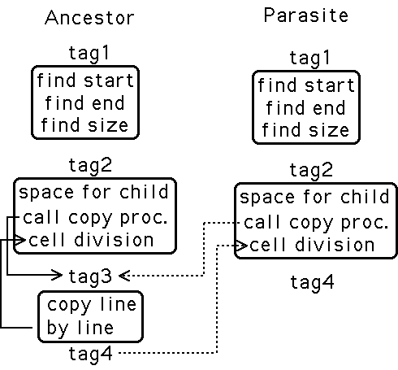

| Artificial Intelligence's younger cousin, closely related to CA, is Artificial Life (ALife). Will this development produce impressive results more rapidly than AI? Writers have long found this topic a fertile ground. Think of Mary Shelly's Frankenstein, Carel Capek's R.U.R., Stanislaw Lem's The Invincible, Richard Powers' Galatea 2.2, Astro Teller's Exegesis, or the Kubrick/Spielberg film A.I., among others. But here science may outstrip fiction. What is possible often is very much stranger than what we can imagine. | |||
| To understand Artificial Life, we should begin with some idea of what constitutes Natural Life. But there are problems with this approach. | |||
| 1. We have only one example, all living things are variants of a single ur-slime. How do we know there aren't other possibilities? Is there life on mars? | |||
| |||
| 2. Reductionism doesn't work so well. Taking apart a living thing gives a bunch of nonliving parts. Life appears to be a collective phenomenon, emergent. | |||
| Origin of Life | |||
| What came before bacteria? | |||
| In Harold Urey's experiment simulating the early earth environment - water, methane, ammonia, carbon dioxide, and UV light - amino acids were produced in a few hours. But how do these assemble into self-replicating molecules? The current model is "RNA world," evolution based on RNA replicase, an RNA molecule that catalyzes its own reproduction. RNA replicase has been extinct for about 3 billion years; current work suggests it will be "resuscitated" fairly soon. This is Wet ALife. | |||
| Dry ALife is ur-slime in silicon; postmodern cyberpunk chic. We shall focus on dry ALife. | |||
| ALife themes: | |||
| * Use computation to investigate the mechanism of emergent phenomena | |||
| * Use biological paradigms - particularly Darwinian coevolution - to design computational schemes. | |||
| One of the most interesting of the early ALife worlds is Tierra, by Tom Ray. Ray designed simple computer programs that can self-replicate and evolve. The program has three parts: self-examination, reproduction loop, and copy procedure. The parts are separated from one another by address tags. | |||
| a tag for the beginning of the self-exam | |||
| a tag for the beginning of the reproduction loop | |||
| a tag for the beginning of the copy proceudre | |||
| The tag for the beginning of the self-exam is the tag for the beginning of the program, and there is a tag at the end of the program. | |||
| Here's how the program reproduces itself. | |||
| 1. Locate the tag at the beginning of the program. | |||
| 2. Locate the tag at the end of the program. | |||
| 3. Subtract their locations to find how large it is. | |||
| 4. Allocate the amount of space just calculated in nearby memory. This is where the program builds its child. | |||
| 5. Copy the program, line-by-line, into the space allocated for the child. Allow for rare mutations. | |||
| 6. Give up write privileges to the child. | |||
| Ray seeded his computer's memory with one of these "ancestor" programs and let it run. In a very short time, something interesting had evolved. | |||
| A mutation changed the beginning of the copy procedure tag into the end of program tag. When this program computed its length, it decided it consists of just self-exam and reproduction loop, no copy procedure. But when the reproduction loop is called, it locates the copy procedure by looking for the tag at the beginning of the copy procedure. If an ancestral program is nearby, the reproduction loop might find this copy procedure, and use it to copy itself. This new program cannot reproduce on its own, but can in the presence of an ancestral creature. So Ray called this a parasite. Because they are smaller, parasites reproduce more rapidly and grow in the popultion. But they cannot kill all the ancestors, or they, too, would die out. | |||
|  | |||
| After parasites, Ray observed the evolution of hyperparasites, programs that self-reproduce, and when approached by a parasite, cause the parasite to copy the hyperparasite. | |||
| Eventually, Liars evolved. When computing their size, liars multiplied the number by 3. The amount of computer time allocated to each program depends on its size, so liars rapidly force everything else into extinction. Ray commented how sobering it is to observe politics appears so rapidly in this artificial world. | |||
| Longer simulations on larger computers reveal mutualism, symbiosis, and social organization. Still longer runs showed periods of stasis followed by very rapid change, the punctuated equilibrium of Gould and Eldredge. Will still longer runs show a Cambrian Explosion? How much of Earth's evolutionary history will appear in ALife worlds? | |||
| Finally, we mention another application of evolution in Gerald Edelman's Neural Darwinism, a controversial view of how the brain produces the mind. Edelman postulates three stages: | |||
| 1. Developmental Selection | |||
| 2. Experimental Selection | |||
| 3. Reentrant Mapping | |||
| 1. Developmental selection is the prenatal migration and adhesion of neurons, forming patterns not fixed genetically, but driven by Darwinian population dynamics. Here the neurons bind together to form "maps," configurations with a specific purpose, e.g., detecting color or motion in vision. | |||
| 2. Experimental selection is the strengthening or weakening of connections. Again driven by Darwinian selection, connections leading to unsuccessful categorizations lose the evolutionary competition. | |||
| 3. Reentrant mapping is the formation of coherent patterns of neural activity successfully categorizing the inputs and contributing to the history of the particular mind. | |||
| From this model, Edelman deduces memories aren't so much reruns as recreations, not a repeat of a movie, but another performance of a play. Also, the mind of each of us is determined by prenatal patterns genetically unpredictable, and sculpted by every sensation and thought we have. | |||
| Where does this leave consciousness? A subsystem of the brain separating us from our environment? This could have evolutionary value, but is it true? "Where do we come from, where are we going?" |
Return to Cellular Automata